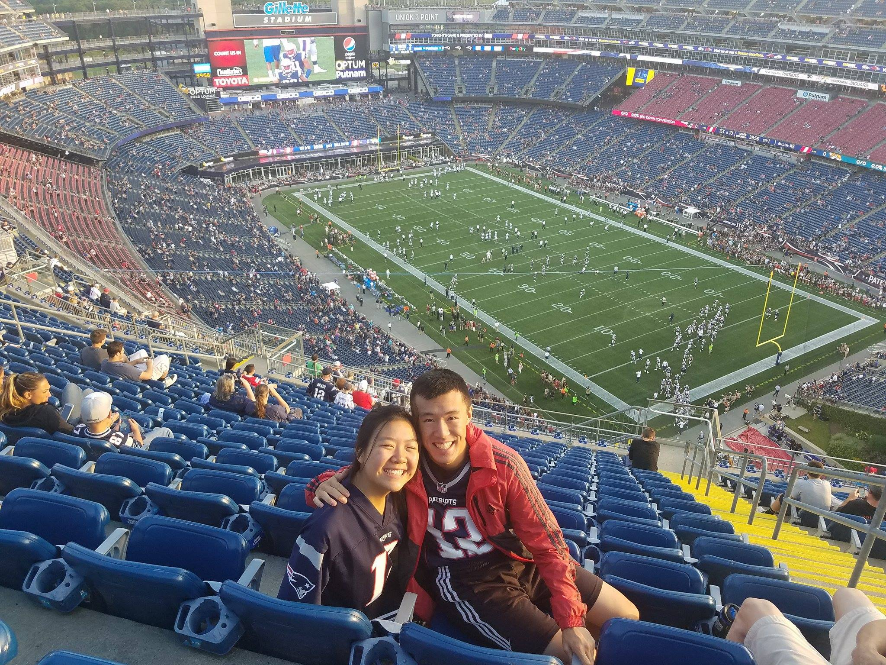
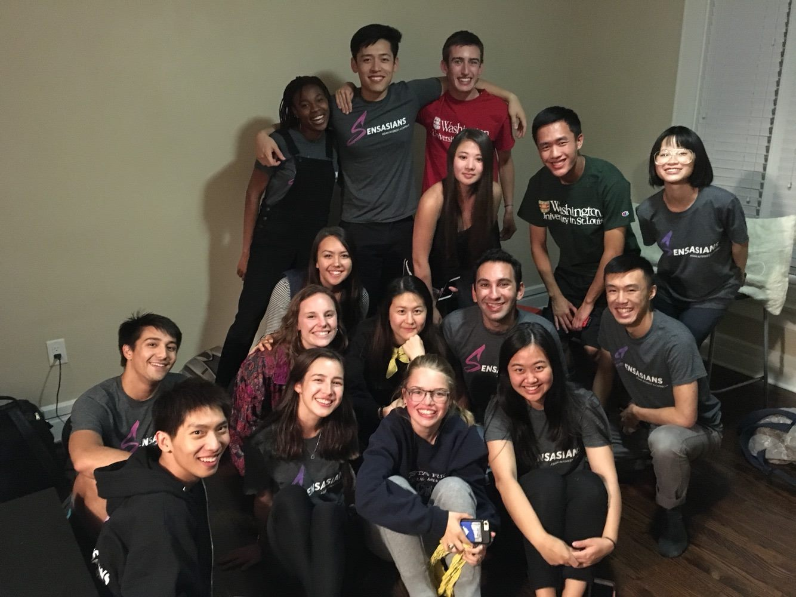
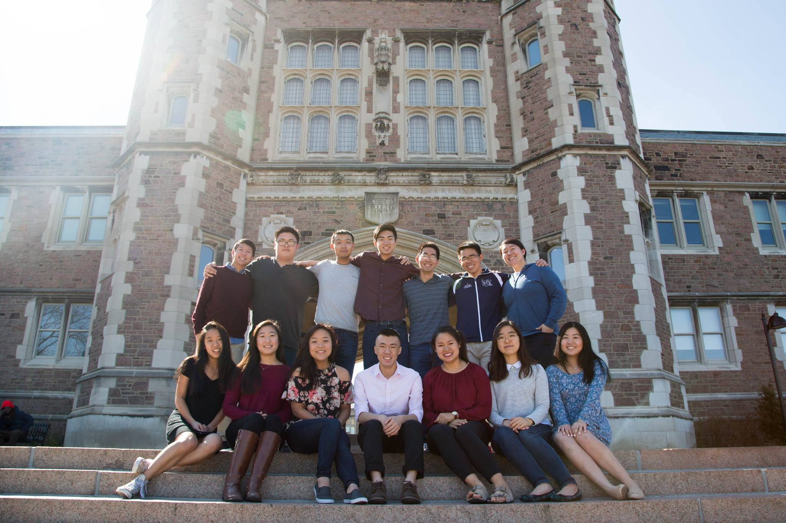

Every day is an opportunity given by God to know him better and love Him more.
I am a student at Washington University in St. Louis, studying Computer Science and Sociology, with a possible minor in Music. I don't know where my current interests will lead me but my hope is that I will be able to serve others and be in meaningful relationships with the unreached.
This semester, I am learning about social theorists, music theory, data structures and algorithms, dynamic web development, calculus-based statistics, and C++.
For me, music is something I am never too tired to engage with. I am currently in The Sensasians, WashU's asian interest a cappella group (disclaimer: I am often tired at rehearsals). Right now, I am listening to "Only King Forever", by Elevation Worship, a bunch of collegiate a capella groups, and some k-pop.
Sports are pretty remarkable to me, partially because of the talent and and ability so many athletes possess in their respective sports and partially because of the ever-changing definition of what it means to have a platform as an athlete. While I follow football the closest (the Patriots), I also follow professional track and field, basketball, baseball, e-sports, and chess (it's a sport). I occasionally spend a bit too much time looking at statistics and sports history.